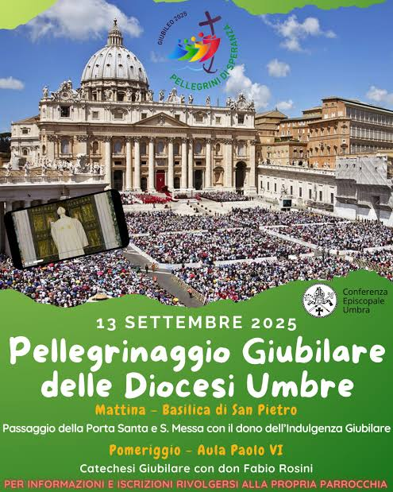
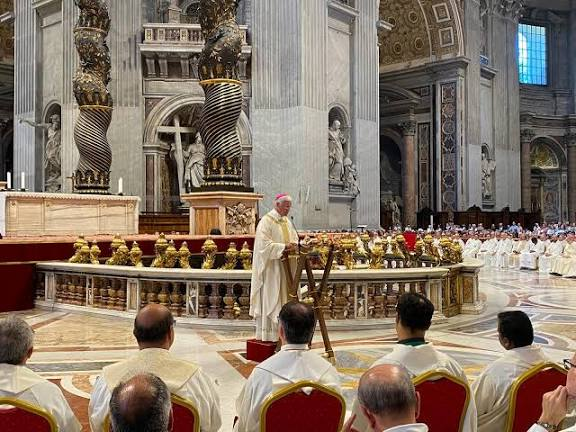
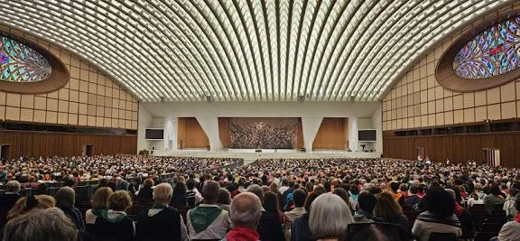
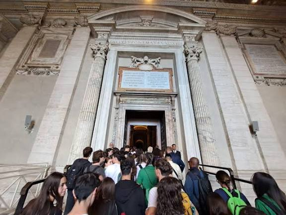
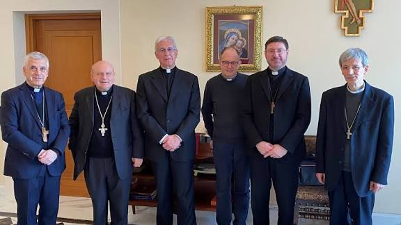

Cronaca e riflessione dalla giornata delle diocesi umbre con Papa Francesco e la catechesi di don Fabio Rosini
Roma, 13 settembre 2025 – La luce di fine estate ha accolto migliaia di pellegrini provenienti dalle otto diocesi dell’Umbria, giunti nella Città Eterna per vivere la giornata giubilare della “Geografia della Speranza”. Un fiume di volti, bandiere parrocchiali, striscioni colorati e passi ancora intorpiditi dall’alba: Gualdo Tadino, Terni, Assisi, Norcia, Perugia, Città di Castello, Spoleto, Orvieto… L’Umbria intera ha camminato insieme.
La giornata si è aperta in Piazza San Pietro, con la celebrazione eucaristica presieduta. Nell’omelia, il porporato ha invitato i fedeli a “non ridurre il Giubileo a un evento da attraversare, ma a lasciarlo entrare dentro come tempo di guarigione e sguardo nuovo”. Le sue parole si sono incrociate con il clima della piazza: silenziosa, raccolta, sorprendentemente unita. La folla era fatta di giovani con zaini consumati, di famiglie con passeggini, di anziani appoggiati ai bastoni della loro storia, e di tanti sacerdoti che conoscono le strade, le valli, le pietre e le lacrime dei loro paesi. Era un popolo riconoscibile: non venuto per guardare, ma per tornare a casa.
Il momento centrale della giornata si è svolto nel pomeriggio, nella Sala Paolo VI – la Sala Nervi – dove è stato invitato a intervenire don Fabio Rosini, sacerdote della Diocesi di Roma e predicatore molto noto per la sua capacità di coniugare profondità e concretezza. L’introduzione è stata semplice e affettuosa: “Gli abbiamo chiesto una parola che ci accompagni – ha detto uno dei vescovi umbri – una parola che ci aiuti a vivere questo Giubileo come un tempo che cambia la vita e non solo il calendario”. Don Fabio ha iniziato con gratitudine e con un sorriso:
“Nel giorno di San Giovanni Crisostomo, chiediamo la sua intercessione: che queste parole siano utili, che facciano bene. Un Giubileo non è un’idea, non è un rito: è un ritorno.”
Rosini ha riportato il discorso alla Bibbia, precisamente al capitolo 25 del Levitico, dove si ordina che ogni cinquantesimo anno ogni uomo torni in possesso della sua terra, del suo “proprio”.
“Il Giubileo,” ha spiegato, “è il tempo in cui ciascuno torna padrone di ciò che è suo. Non ciò che possiede, ma ciò che è. L’eredità. L’identità. La casa.”
Per comprendere questo ritorno, Rosini ha scelto una parabola familiare e universale: il Figliol Prodigo.
“Lui voleva essere grande, libero, autonomo. Ma libertà non è andare lontano: è sapere dove è casa. Rientrare in sé stessi significa ricordarsi che si è figli. E il luogo più bello del mondo è la casa del Padre.”
Nella sala sono caduti silenzi profondi: non quelli di chi non capisce, ma quelli di chi riconosce.
A questo punto la riflessione ha toccato il cuore del pellegrinaggio:
“Ci sono due modi di muoversi: si può andare per guardare, oppure si può andare per incontrare. Il turista guarda, osserva, colleziona. Il pellegrino toglie i sandali. Entra in intimità. Porta la sua fragilità davanti a Dio.”
Rosini parla piano, ma le sue parole arrivano come fendenti:
“Non siete venuti a Roma per vedere Roma. Siete venuti perché Dio vi tocchi il cuore. E il cuore si tocca solo a piedi nudi, cioè riconoscendo quanto siamo poveri.”
Un passaggio della catechesi ha suscitato sorrisi, risate e un improvviso senso di verità:
“Ci sono i pellegrini e ci sono i fugiaschi. I pellegrini camminano verso qualcosa. I fugiaschi scappano da qualcosa. Non sposatevi per fuggire dalla solitudine; non scegliete una vocazione come tana; non fate scelte strategiche: fate scelte vere. Volete vivere o sopravvivere?”
Parole semplici, ma non semplicistiche. Dirette.
Il predicatore ha poi indicato la dimensione comunitaria:
“Il pellegrino non è un solitario. Va insieme. Anche quando non sopporta gli altri, anche quando gli altri non lo capiscono. La fede si cammina in cordata. Il cielo è sinodale.”
La Sala Nervi era piena. Eppure, in quel momento, sembrava piccola. Come una chiesa di paese.
La parte più concreta della catechesi è arrivata con un’immagine autobiografica: il suo pellegrinaggio a Santiago.
“Quando cammini 25 km al giorno, puoi portare solo 7 chili nello zaino. Il superfluo fa male. Il superfluo pesa. Il superfluo ti ferma. Anche nella vita: lasciamo troppo spazio a ciò che non ci serve.”
Poi la svolta:
“Il contrario dell’amore non è l’odio: è il possesso. L’amore dona, il possesso trattiene. E il cielo si entra solo poveri. Le tombe non hanno tasche.”
Infine, un’immagine che ha commosso molti:
“Il violoncello ha un legno segreto che si chiama ‘anima’. Se si sposta, il suono diventa metallico, brutto. Così l’uomo: se perde l’anima, tutto stona. E tu? L’anima ce l’hai ancora al suo posto?”
Silenzio.
Lì, non era più conferenza. Era preghiera.
La catechesi si è chiusa con un invito, quasi un appello:
“Una porta serve per entrare. Non per guardarla. Oggi avete attraversato la Porta Santa. Ma la vera domanda è: siete entrati? Oppure siete rimasti uguali? Lasciate che questa vita vi cambi. Lasciate che Dio vi voglia bene. Tornate a casa.”
Quando la Sala si è svuotata, nessuno sembrava avere fretta. Si parlava piano. Si camminava come dopo una scoperta. C’era chi piangeva. C’era chi sorrideva. C’era chi guardava il cielo. Una giovane di Foligno, 24 anni, ha detto solo: «Mi sono ricordata chi sono». Un uomo di 70 anni, venuto da Spello con il gruppo parrocchiale, ha sussurrato: «Era da anni che non mi confessavo. Ora torno». Forse è questo, il Giubileo.
Non un evento.
Non una data.
Non Roma.
Ma un ritorno.
Un rientrare in sé stessi.
Un ritrovare la porta della casa.
E attraversarla.